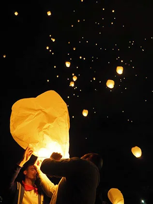

Lunch en el jardín
Los primeros bocados al aire libre, en un espacio amplio y tranquilo.
Muestra preparada por OI Studio para Beko Errota, con los datos y fotos de su web. Sin compromiso.

de la parrilla y del mar
Precios con IVA incluido
Desde los años 80, en Jaizubia
A comienzos de los años 80 la familia reformó un viejo molino del barrio Jaizubia, y desde entonces no ha parado de renovarlo. Alrededor, el jardín, el estanque, los viñedos y los olivos de los que salen su txakoli, su sidra y su aceite.

Muy selecto, de viñedo familiar, afrutado y aromático.
Un referente para las celebraciones de la comarca del Bidasoa: cinco comedores que se combinan, de una boda íntima a un congreso.
Los primeros bocados al aire libre, en un espacio amplio y tranquilo.

Cinco comedores de distintos tamaños, que se combinan según lo que necesitéis.

Para quien quiera quedarse hasta tarde: pintxos y fiesta.